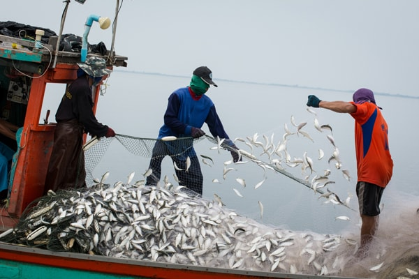

🏠 To Head Back to the Home Page Click Here!
Businesses
Tons of Fish Sold and Caught in 2018
- $22.4 billon worth of imports
- there were 2,760,859 metric tons of edible imports
- 1,294,172 metric tons of export
- 693,434 tons of Shrimp
- 387,061 tons of Salmon
- 122,824 tons of Tuna
These are Some of the Main Fishing Businesses
- Lusamerica Foods Inc
- Pacific Brokers
- Half Moon Bay Groundfish Marketing Association
- Ventura Port District
- Pacific Ocean Marine Insurance
